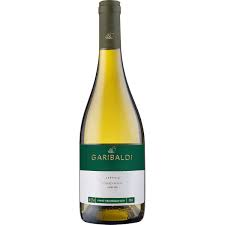
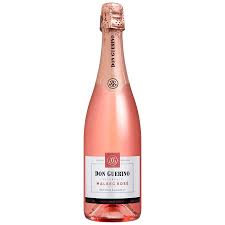

Nossos Produtos
Vinho TintoPaís: Portugal Produzido na região do Douro, em Portugal, este vinho tinto é encorpado, com aroma frutado e notas de madeira. Ideal para acompanhar carnes vermelhas e queijos. |

Vinho BrancoPaís: França Produzido na região de Borgonha, na França, este vinho branco é feito com a uva Chardonnay e apresenta aroma floral e notas de frutas tropicais. Ideal para acompanhar peixes e frutos do mar. |

Vinho RoséPaís: Argentina Produzido na região de Mendoza, na Argentina, este vinho rosé é feito com as uvas Malbec e Cabernet Sauvignon e apresenta notas de frutas vermelhas frescas e uma acidez equilibrada. Ideal para acompanhar pratos leves, como saladas e frutos do mar. |

EspumantePaís: Brasil Nosso espumante é produzido com as melhores uvas selecionadas, seguindo as tradições da região de Champagne na França. Com aroma delicado e sabor equilibrado, é perfeito para comemorações e ocasiões especiais. |
Vinho RoséPaís: Espanha Produzido na região da Toscana, na Itália, este vinho rosé seco é feito com as uvas Sangiovese e Merlot e apresenta notas de frutas vermelhas e flores. Ideal para acompanhar saladas e pratos leves. |

Vinho TintoPaís: Chile Produzido no Valle del Maipo, no Chile, este vinho tinto é feito com a uva Carménère e apresenta aroma intenso de frutas vermelhas e notas de especiarias. Seu sabor é marcante e levemente encorpado, ideal para acompanhar carnes assadas e queijos. |